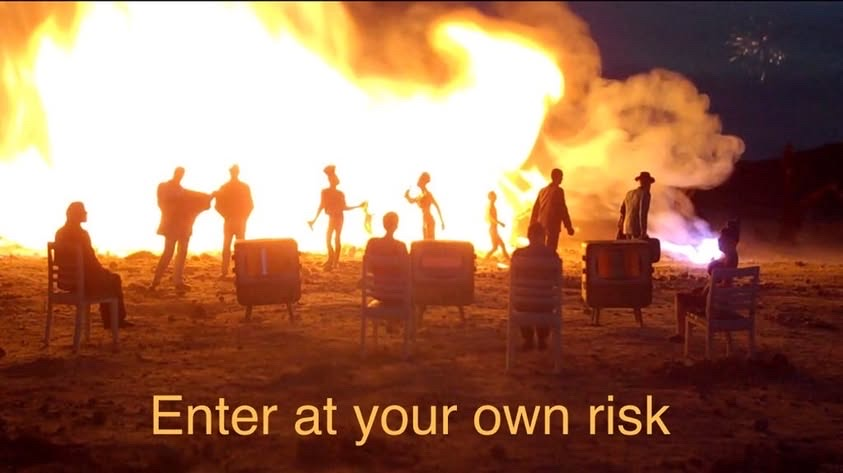
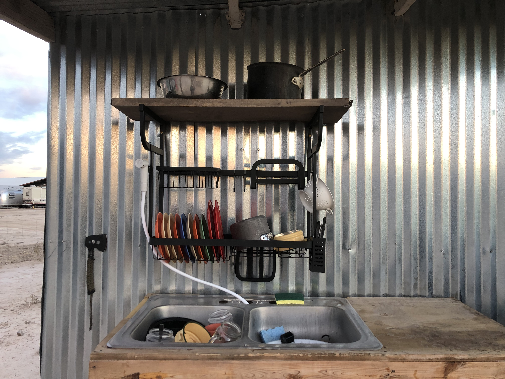

← Back to Home
Camp

D.U.S.T. is a High Risk / Lobo Expectations Gathering Experience. This is a community art & music event — not a staffed festival. We welcome you to come camp with us, and to connect and reconnect through music and art under the stars.
If you want something less rustic, there are affordable hotels in Van Horn and a full hookup RV park in Valentine.
RSVP: To help us prepare, please read the information below and RSVP for camping; update your RSVP should anything change. We will be using the RSVP list to email additional info regarding camping check-in, etc.
High Risk
- Rattlesnakes, coyotes, tarantulas, cactus & other pokey plants.
- Dry & hot. Bring your own drinking water – bring ENOUGH drinking water. Our well water is potable but very salty.
- Dusty & windy. We have dust storms, thunderstorms and generally intense weather out here. Check the weather and come prepared for unpredictability.
Lobo Expectations
- This is not glamping.
- Small RVs okay, no hookups
- If you’d like a quieter camping experience about a mile away, just let us
know in your RSVP.
- We are off grid. With that said you can charge your small devices on the
porch during the day, but please no charging of large batteries.
- Composting & flush toilets available.
- Very limited rinse-off salt water solar shower available.
- Bring everything you need as if you were camping in the wilderness. This
includes a chair, shelter, food, cooking supplies. The closest store is 20
minutes away.
- Fill your cooler with ice in town.
- You can cook on the grill or over the fire pit. If you’re a vegetarian, please
ask about the secret vegetarian-only grill. We have dish washing stations
with limited water.
- We have a cell phone booster and WiFi.
RSVP:
Please fill out this form.
More questions? Email dustlobo@gmail.com.
